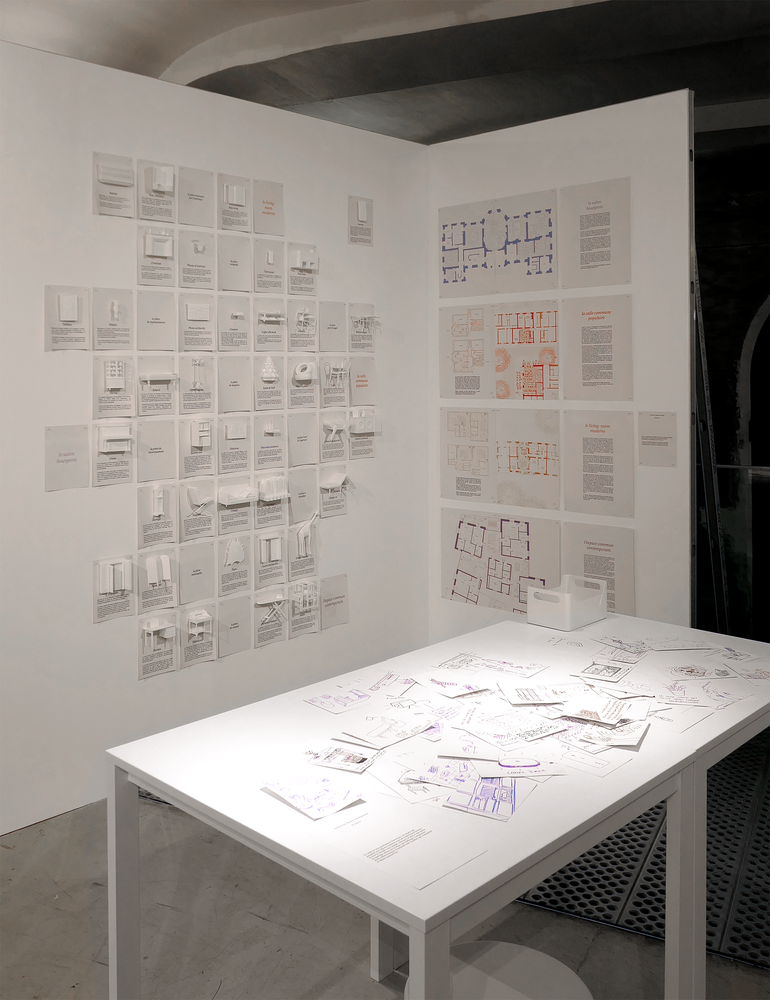
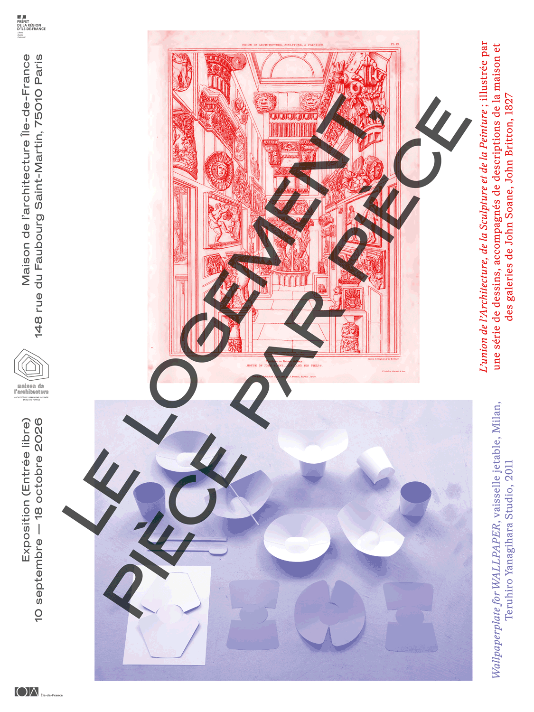
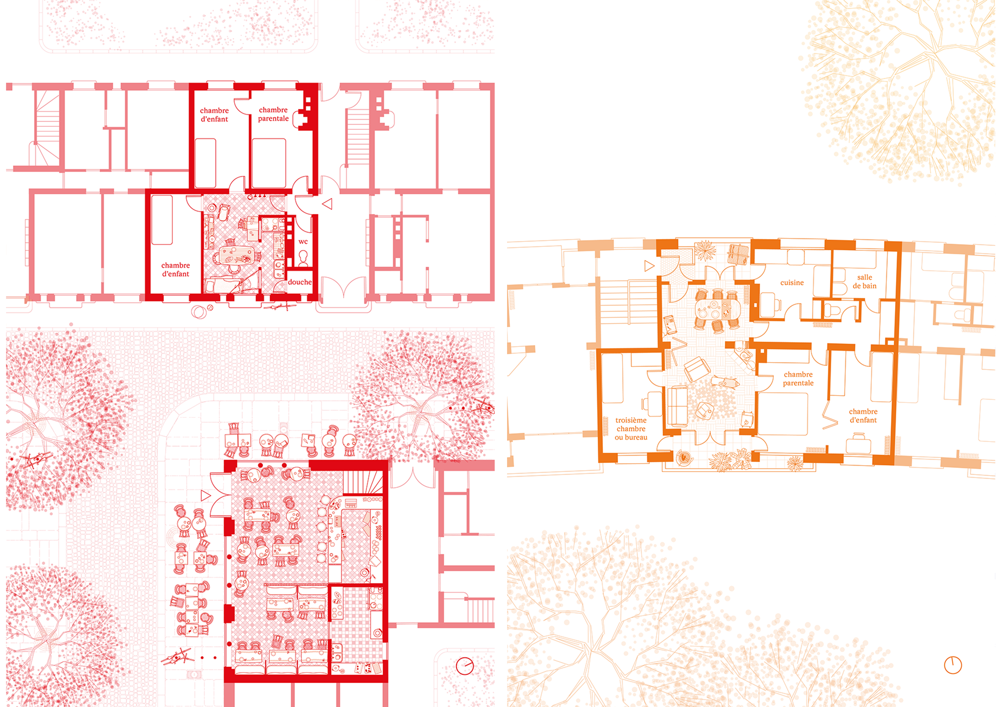
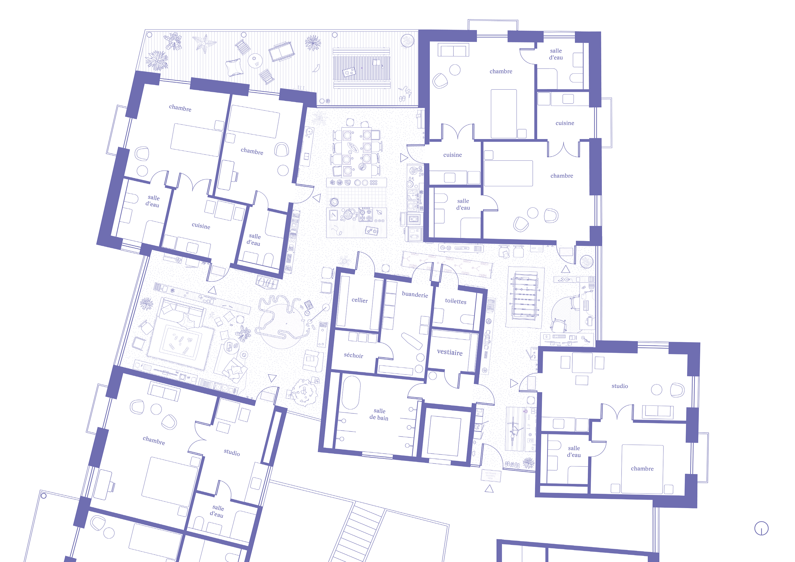

Le séjour, du salon bourgeois à l'espace commun
contexte : comissariat partiel de l'exposition "Le logement pièce par pièce"
institution : maison de l'architecture d'Ile de France
date : septembre 2026
scénographie : Matters.xyz
type : enseignement et recherche
Organisée par la Maison de l'Architecture d'Ile-de-France, l’exposition Le logement pièce par pièce propose une traversée de l’habitat, de son histoire, de son actualité, et de ses enjeux, par le biais des pièces qui le composent. Six agences ont été missionnées, chacune se penchant sur une pièce spécifique de la maison. Aux côtés de ANAU (la chambre), Paris U (le couloir), Septembre (la cuisine), Dadour de Pous (les prolongements extérieurs) et 127af (la salle de bain), mostro s'est intéressé au séjour.
De l’italien salone, soit grande salle, le salon fait son apparition dans les mœurs et dans la pierre au XVII° siècle chez la bourgeoisie récemment constituée comme classe. Parallèlement, la majorité des foyers populaires partagent leurs repas et leur temps libre dans la salle à manger ou salle commune.
De cette double origine – dont la synthèse se fera peut-être via le living-room moderne – le séjour a hérité d’une certaine informité, une indétermination spatiale qui résulte d’une prolifération de ses usages possibles.
Délaissant la composition pour l’ameublement, le séjour est ici ausculté en trois séquences au travers des objets qu’il abrite et non des formes qu’il revêt. Par un inventaire des éléments qui ont traversé l’histoire de cette pièce, tentons de comprendre les fonctions passées, présentes et futures auxquelles le séjour répond.
Allant du général au particulier, ce répertoire de formes d’abord abstraites s’instancie dans des plans historiques avant de s’ouvrir aux visiteur·ices qui peuvent alors participer à cet atlas de nos intériorités.






